Configure a C# Adapter with HTTPS and WSS
To setup a C# Adapter with HTTPS and WSS, complete the following procedures:
Create a Self-Signed Server Certificate
- Run the following command to create the Root Authority:
makecert -r -n "CN=SORIS Root Certificate" -pe -sv SORISRootCert.pvk -a sha1 -len 2048 -b 01/01/2015 -e 01/01/2030 -cy authority SORISRootCert.cer
Enter a password three times. The password is needed for the next step. - Run the following command to create the Self-Signed Server Certificate:
makecert -ic SORISRootCert.cer -iv SORISRootCert.pvk -pe -sv SORISServerCert.pvk -a sha1 -n "CN=SORISServerCert" -len 2048 -b 01/01/2015 -e 01/01/2030 -sky exchange SORISServerCert.cer -eku 1.3.6.1.5.5.7.3.2
Enter a new password three times for the certificate. The password is needed for the next step. When asked for Issuer Signature, type the password from Step 1. - Run the following command to create the PFX Key:
pvk2pfx -pvk SORISServerCert.pvk -spc SORISServerCert.cer -pfx SORISServerCert.pfx
Enter the password from Step 2.
Install the Server Certificate
- You want to install the SORISRootCert.cer file and the SORISServerCert.pfx file to the Microsoft Management Console.
- To launch Microsoft Management Console, click Start.
- In the Search field, enter mmc, and in the Programs section, click mmc.exe.
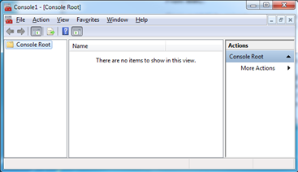
- Click File > Add/Remove Snap-in.
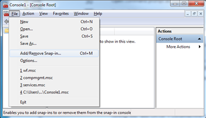
- Select Certificates from the list on the left, and then click Add.
The Certificates snap-in dialog box displays.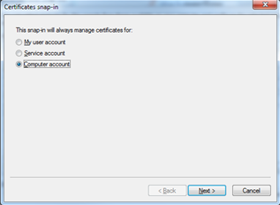
- Select Computer account, and then click Next.
- Select Local computer, and then click Finish.
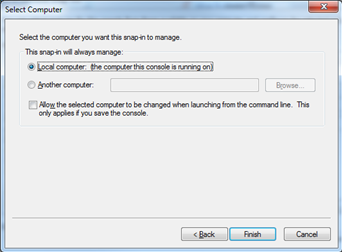
- The certificate is added to the Selected snap-ins pane.
- Click OK.
- Expand the Certificates branch and select Personal.
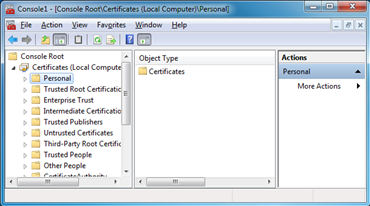
- Click Action > All Tasks > Import.
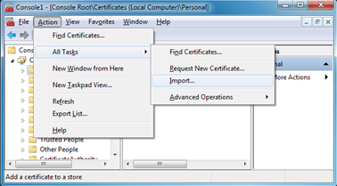
- Click Next.
- Click Browse.
- Click the file drop-down list, and select All Files.
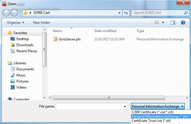
- Navigate to and then select the pfx file.
- Click Open, and then click Next.
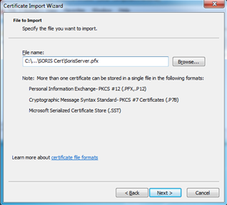
- Enter the password for the pfx file, and then click Next.
NOTE: If you created the pfx using the self-signed procedure, the password field is blank, and you can leave it blank.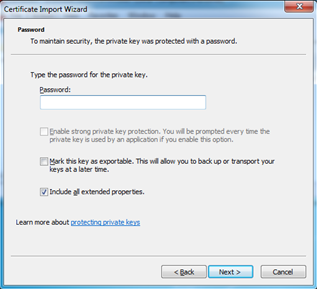
- Place the certificate in the Personal certificate store.
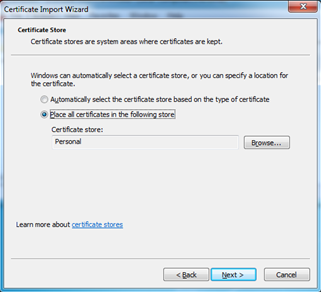
- Click Next, and then click Finish.
The Certificate displays in Certificate > Personal > Certificates.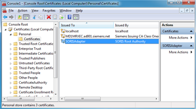
- Repeat Steps 8 – 17 to install the SORISRootCert.cer file in the Trusted Root Certificate Authorities > Certificates folder.
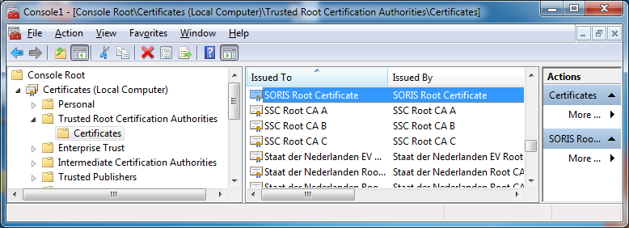
- To copy the certificate Thumbprint, double-click the certificate you just installed.
The Certificate window displays.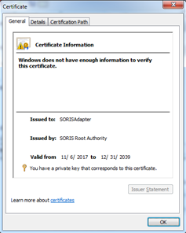
- Click the Details tab, and then find and select Thumbprint in the Field column.
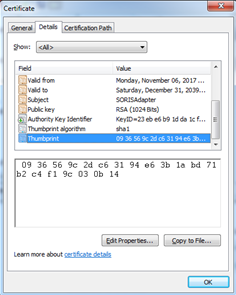
- Copy and Paste the Thumbprint into a text editor and remove white spaces.
NOTE: depending on how the Thumbprint is copied, there may be a whitespace at the beginning of the string. If there is, you should remove it.
Example of copied Thumbprint:
09 36 56 9c 2d c6 31 94 e6 3b 1a bd 71 b2 c4 f1 9c 03 0b 14
Example of Thumbprint with white spaces removed:
0936569c2dc63194e63b1abd71b2c4f19c030b14
NOTE: You will need to use the thumbprint in two separate locations to configure HTTPS and WSS.
Register the HTTP Port for HTTPS Security
- The certificate is installed on the computer, and you need to register the communication port with the certificate for HTTPS security.
- Launch the Command Prompt with Administrative Privileges.
- Run the following NetSH command to register the port that is being used by the SORIS Adapter.
NOTE: When the SORIS adapter is first started, it lists the IP address and Port being used. If the adapter needs to validate client certificates for added security (see Configure a C# Adapter to Accept Client Certificates for more details), then the Client Certificate Negotiation option needs to be enabled with netsh.
With Client Certificate Negotiation:
netsh http add sslcert ipport=0.0.0.0:PORT_# certhash=COPIED_THUMBPRINT appid={00112233-4455-6677-8899-AABBCCDDEEFF} clientcertnegotiation=enable
Without Client Certificate Negotiation:
netsh http add sslcert ipport=0.0.0.0:PORT_# certhash=COPIED_THUMBPRINT appid={00112233-4455-6677-8899-AABBCCDDEEFF}
Example:
netsh http add sslcert ipport=0.0.0.0:8080 certhash=99ecdbd25d2c6c9260b7da17e9934721e9095480 appid={00112233-4455-6677-8899-AABBCCDDEEFF} clientcertnegotiation=enable - To verify that the Port is registered, run the following command:
netsh http show sslcert ipport=0.0.0.0: PORT_# - To remove the Port registration, run the following command:
netsh http delete sslcert ipport=0.0.0.0: PORT_#
Configure the WebSocket to Use WSS (TLS) Security
- You want to configure the WebSocket to use the security certificate for WSS (TLS) communication.
- The certificate is installed on the computer, and you want to bind the WebSocket using the Thumbprint from the Installing the Certificate section.
- Do one of the following:
- In the SmartDeviceAdapter.cs file, navigate to the CustomAdapterSettings method.
- Search for “#TODO: WSS SECURITY”.
- Add your certificate Thumbprint, as shown in the following example:
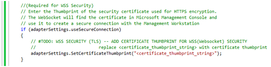
Start the Adapter in Secure Mode
- Run the adapter with the -secure flag
Example: Adapter.exe –secure